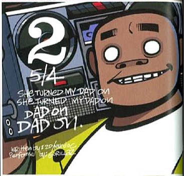
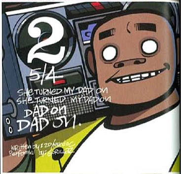

Gorillaz. Gorillaz: 5/4
5/4 es una canción del álbum Gorillaz. Se trata de una canción polirrítmica con un riff de guitarra tocado en 5/4, dándole nombre a la canción, mientras que otros instrumentos son tocados en 4/4

5/4 es una canción del álbum Gorillaz. Se trata de una canción polirrítmica con un riff de guitarra tocado en 5/4, dándole nombre a la canción, mientras que otros instrumentos son tocados en 4/4
La canción trata sobre la crítica de la mentalidad de rebaño, el aislamiento y el escapismo.

Esta es una canción sobre el alcoholismo y cómo puede arruinar las relaciones. En el video, el líquido parece jugo de naranja, pero al final se revela que es cerveza, lo que te dice todo el concepto de la canción.